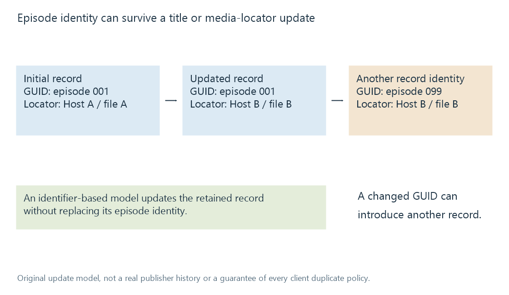

Podcast episode identifiers
A podcast episode identifier preserves a published item’s identity across descriptive and delivery changes without equating that identity with a filename or media hash.
An episode identifier lets a client recognise a published programme after its title, description or media location changes. It supplies continuity that a display title cannot.
RSS calls the field guid. Despite the name, its value need not be a UUID. RSS defines it as a string; when isPermaLink="false", the reader should not assume it is a web address.
The original Harbour Notes example uses:
<guid isPermaLink="false">harbour-notes:episode:001</guid>
The text is an invented opaque key. A publisher needs an appropriate uniqueness scope; a client retains the relevant feed/subscription context as well as the key.
The locator can change while the episode stays the same
| Observation | GUID | Media locator | Meaning in this original model |
|---|---|---|---|
| Initial publication | episode:001 | Host A / file A | First observed record |
| Title correction and host migration | episode:001 | Host B / file B | Updated record for the same identified episode |
| Same programme reintroduced under another GUID | episode:099 | Host B / file B | Another published identity requiring interpretation |
The table abbreviates the invented keys and locators. It is not a real feed history.

A client that keys records by stable GUID can update the second row without creating another episode. If it keys only by locator, the migration can look like a new programme. If a GUID changes, an identifier-based client can treat the third row as another record even when the media bytes agree.
Actual duplicate handling can use more evidence. The table explains the identity boundary rather than predicting every client's result.
Stability supports continuity
Apple Podcasts requires episode GUIDs that do not change. This is a concrete example of an ecosystem relying on identifier persistence.
A corrected title should not force a viewer's listened state to become unrelated to the episode. A signed delivery URL can change for access reasons without being a useful programme identifier. A filename can change when the recording is downloaded to another device.
A GUID supplied as a permalink has different declared behavior. RSS's default isPermaLink value is true; explicitly false is important when the key is not a usable episode page URL.
Episode identity is not byte or timeline identity
A stable published identity can accompany a replacement audio resource. A publisher may correct audio or change inserted material while retaining the programme record.
A complete-file hash would notice changed bytes, but it answers a resource question. A resume value needs the corresponding media timeline. If the replacement inserts a minute before the saved point, retaining the episode identity does not supply an automatic timestamp conversion.
For a downloaded episode added to an Emby library, the file's catalogue identity and the publisher's GUID can be separate relationships. A reliable workflow preserves whichever context it needs rather than assuming the local path reconstructs the publisher's identifier.
See Also
- Podcast RSS feeds
- Podcast series and episode organisation
- Media item identity
- Resume positions and playback timelines